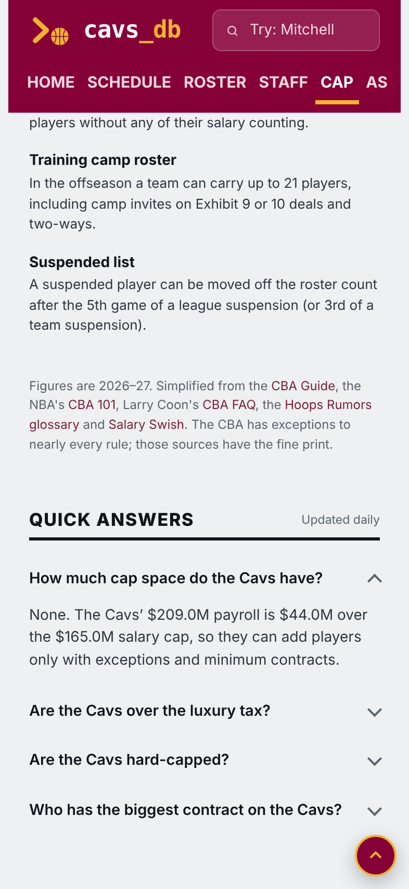
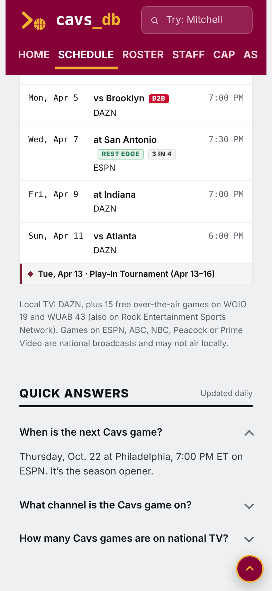

A small, collapsed list at the very bottom of the Cap, Schedule and Roster pages. The answers are written from the site’s own data, so they update themselves every day. Google often shows answers like these at the top of search results.


Roster page questions:
Nothing else on any page changes. Only the first question starts open.